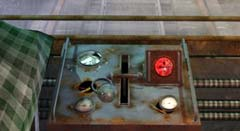
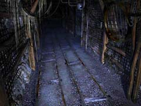

| 概要 | 地図 | |
| 淡いヒント集 | ヒント集 | 的確なヒント集 |
| 攻略最短ルート | Syberia 攻略へ |
| << 前の段階へ | 地域選択へ | 次の段階へ >> |
コムコルツグラッド
|

オスカーの猿ぐつわをほどき、ペンチを入手したあなたには、犯人を追う前にやることがある。先ほど訪れた人型建物へ再び上らなければならない。 そこで、建物を中間地点へ移動し、外へ出るのだ。 
そとへ出ると、別な建物へ飛び移れるだろう。壁には穴が開いており、中が見られる。壁は先ほど拾ったペンチで破ることができ、それにより中へ入ることができるだろう。 中は小さな部屋となっており。いろいろなものが置いてある。この部屋で棚に置いていある点火プラグを入手したら、また人型の建物へ戻ろう。 次に、機関車の最後尾あたりへ移動しよう。そして、何もないところに付けられているレバーを引く。すると、地下からエレベーターが上がってくるだろう。

エレベーターに乗って下へ移動すると、真っ暗な坑道へ着くはずだ。この先は間違いなくどこかへ続いているはずだが、暗くて先へ進めない。 
坑道の隅に置いてあるこの怪しい装置を調べてみよう。これは、坑道に付けられた電球に電気を伝える機械である。しかし、このままでは動かない。先ほど入手した点火プラグを取り付けて、レバーを動かすことで装置が動く。 そうすれば、坑道に明かりがともるだろう。 |
| << 前の段階へ | 地域選択へ | 次の段階へ >> |
| 概要 | 地図 | |
| 淡いヒント集 | ヒント集 | 的確なヒント集 |
| 攻略最短ルート | Syberia 攻略へ |
Syberia
| 目次へ戻る | ページの上部へ |